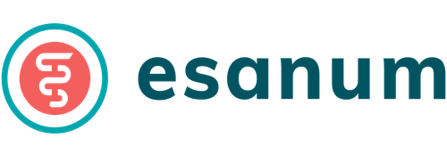
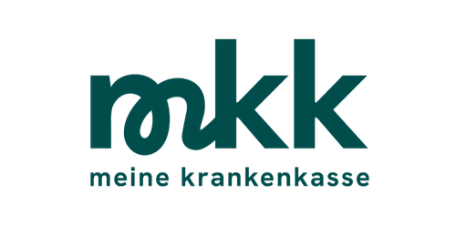
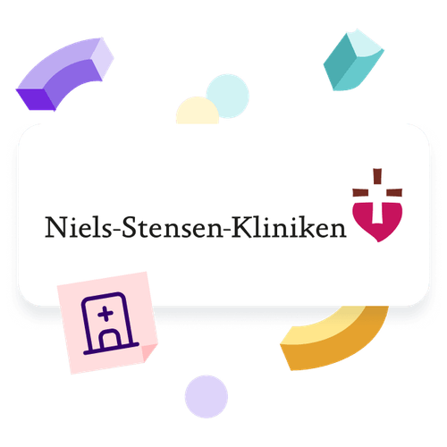
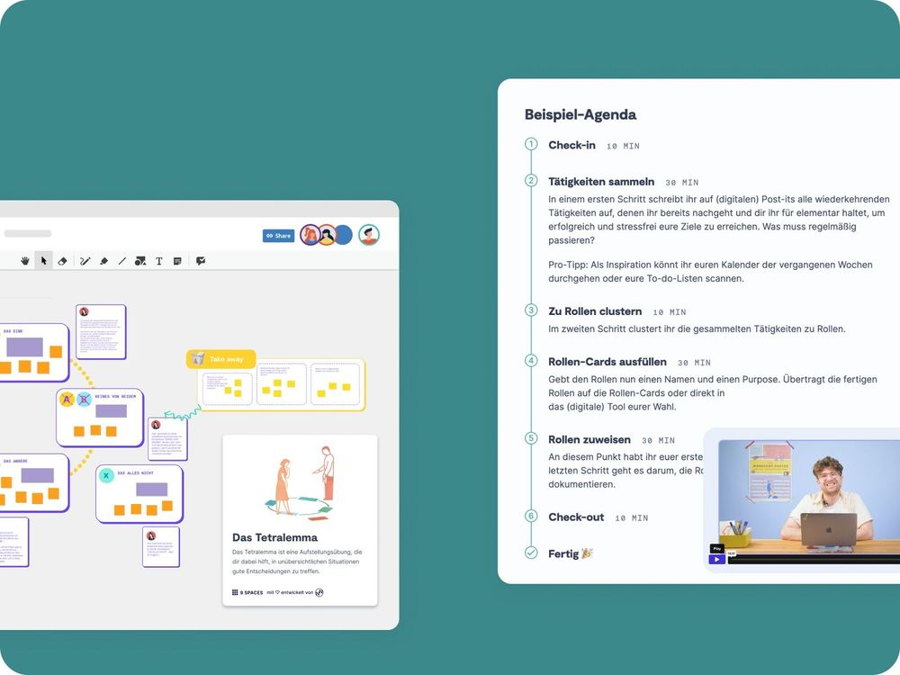

Business
ab 5 Nutzer*innen
Zugang für ausgewählte Nutzer*innen
Wir glauben, dass starke Teams die Basis für ein starkes Gesundheitswesen sind. Mit über 150 Workshops und Methoden unterstützen wir euch dabei, Zusammenarbeit zu verbessern und Abläufe zu optimieren.
Hier lernt ihr, wie weniger Abstimmungschaos mehr Zeit für Patient*innen und Teams bedeutet.



Mit 9 Spaces bringt ein Pflegeteam der Niels-Stensen-Kliniken frischen Schwung in die Zusammenarbeit. Was früher unausgesprochen blieb, wird heute aktiv angegangen – für mehr Klarheit und spürbare Beteiligung im Alltag.
Damit ihr nicht nur über Veränderung sprecht, sondern sie auch umsetzen könnt, liefern wir euch das notwendige Material:

🩹 Über 47.400 unbesetzte Stellen im Gesundheitswesen in 2024 – der Fachkräftemangel verschärft die Versorgungslage und erhöht die Arbeitsbelastung für bestehende Teams.
📊 61,3 % der Ärzt:innen und Pflegekräfte sehen Bürokratie als größtes Hindernis für die Digitalisierung im Gesundheitswesen, während 56,8 % die hohen Kosten als größte Herausforderung betrachten.
📉 Sinkendes Vertrauen – Nur 52 % der Bürger:innen zählen das deutsche Gesundheitswesen noch zu den besten der Welt.
Quellen: ÄrzteZeitung, Statista, PWC
Große Veränderungen können schnell überwältigend wirken. Mit der maßgeschneiderten Transformationsreise bekommt ihr ein Planungs-Tool für die Transfromation, individuell auf eure Herausforderungen abgestimmt.
Zugang für ausgewählte Nutzer*innen
Unser Team unterstützt dich gerne dabei, die perfekte Lösung für euch zu finden.